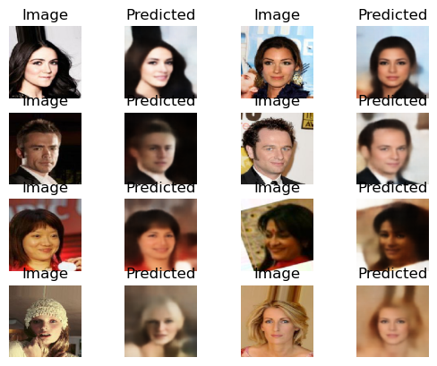
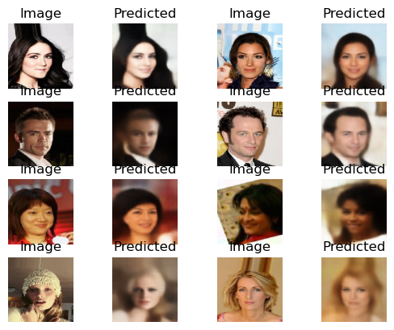
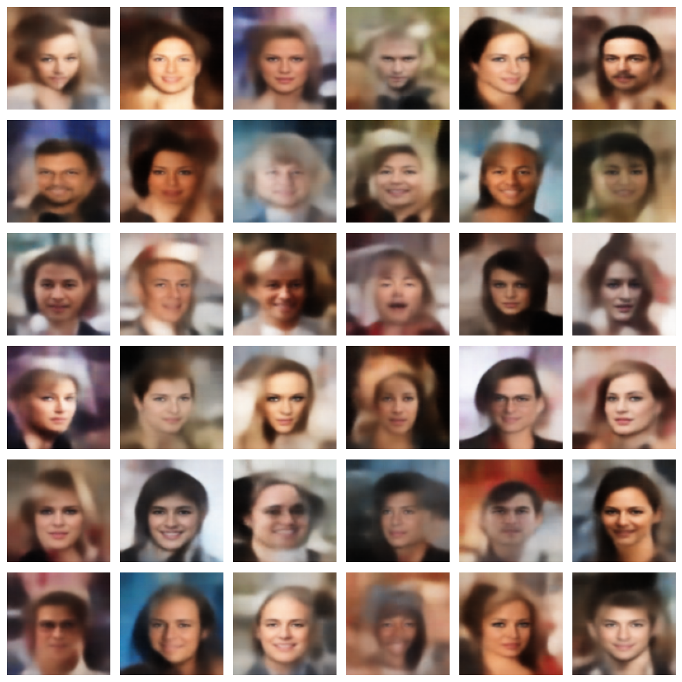
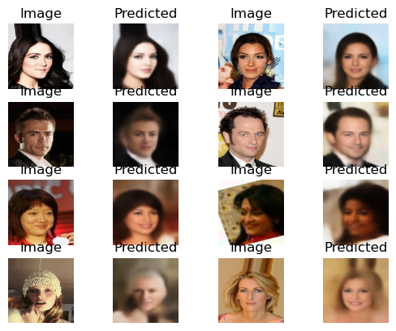
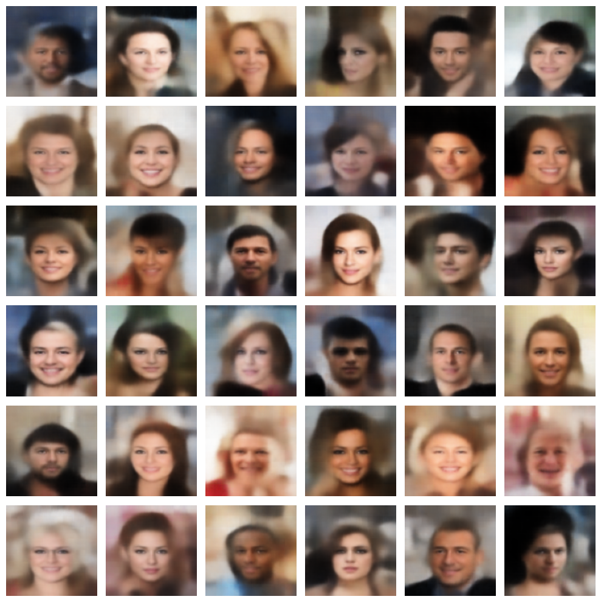
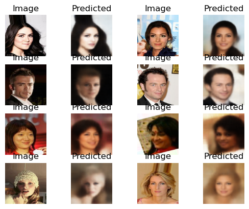
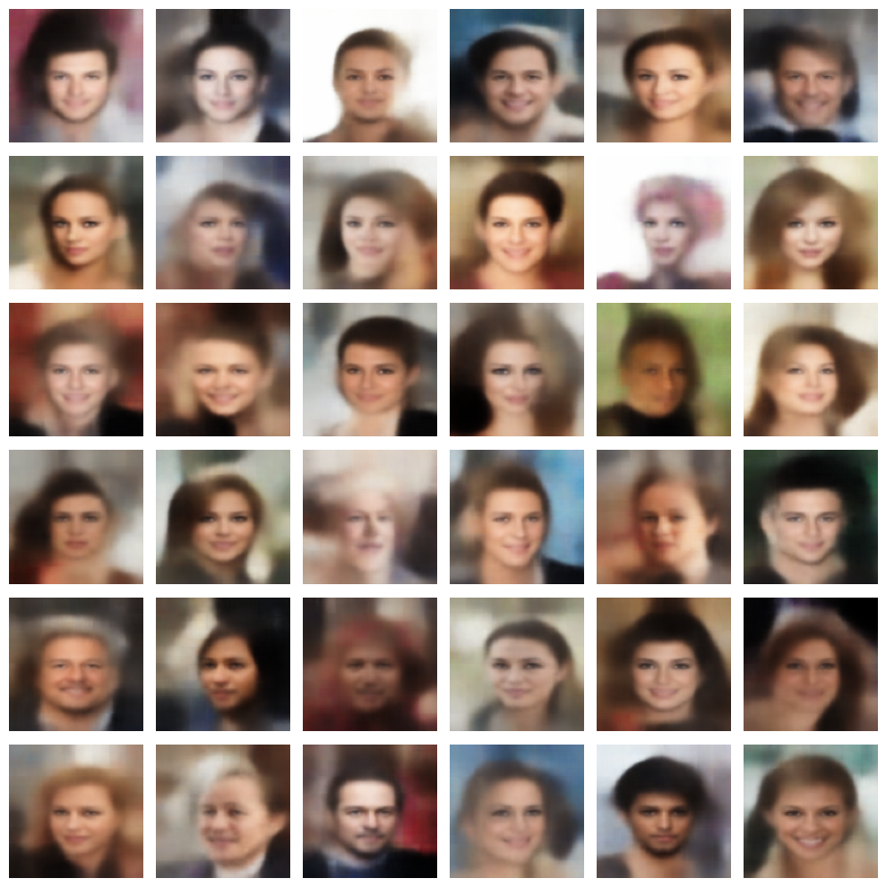

Autoencoder
The module
A module allowing to train a new model or saved one and to load an autoencoder to visualize prediction
- autoencoder.create_autoencoder(input_shape, latent_dim, beta=1)
Create the autoencoder and print the resume
- Parameters :
input_shape (tuple): Shape of the inputs. latent_dim (int): Dimensionality of the latent space.
- Returns:
The untrained autoencoder model.
- Return type:
keras.models.Model
- autoencoder.create_decoder(shape_before_flattening, z)
create the decoder model
- Parameter :
- shape_before_flattening (tuple) = Shape of the data before flattening in the encoder
z (layers.Layer): Layer using the sampling function.
- Returns:
keras.models.Model = the decoder model
- autoencoder.create_encoder(input_shape, latent_dim)
create the encoder model
- Parameter :
input_shape (tuple) : size of the input given to the encoder
- Return :
shape_before_flattening (tuple) = shape of the data before flattening z = the latent layer encoder = the encoder model
- autoencoder.display_data_set(data)
Display the 8th first pictures of the 1rst batch of a set of data
- Parameters :
data (numpy.ndarray) : set of image data (train or validation set)
- autoencoder.load_autoencoder_model(model_path)
Load the encoder and the decoder from a saved autoencoder
- Parameters:
model_path (str) –
- Return :
autoencoder_loaded = the full autoencoder model encoder = the encoder part of the autoencoder model decoder = the decoder part of the autoencoder model
- autoencoder.plot_loss(train_loss, val_loss)
Plot the loss of the model.
- Parameters:
train_loss (list) – List of training loss values.
val_loss (list) – List of validation loss values.
- autoencoder.sampling(args)
Sampling function for the latent space.
- Parameters:
args (tuple) – Mean and log variance of the latent distribution.
- Returns:
Sampled latent variable.
- Return type:
Tensor
- autoencoder.split_data(im_fold, seed_nb, image_size, batch_size)
Split the data into training and validation sets.
- Parameters:
im_fold (str) – Path to the folder containing the pictures.
seed_nb (int) – Seed number to use for reproducibility.
image_size (tuple) – Size of the images.
batch_size (int) – Size of the batches.
- Returns:
Training data. val_data (keras.preprocessing.image.DirectoryIterator): Validation data.
- Return type:
train_data (keras.preprocessing.image.DirectoryIterator)
- autoencoder.test_encoder_decoder(data_batch, encoder, decoder, nbr_images_displayed)
Test the encoder and decoder separately.
- Parameters:
data_batch (numpy.ndarray) – Batch of data.
encoder – The encoder part of the model.
decoder – The decoder part of the model.
nbr_images_displayed (int) – Number of images to display.
- autoencoder.train_model(train_data, val_data, model, nbr_epochs, steps_per_epoch, saving_name, graph=True)
Train the model on a train set and save it.
- Parameters:
train_data – Set of data to train on.
val_data – Set of data used for validation.
model – The compiled model.
nbr_epochs (int) – Number of epochs.
steps_per_epoch (int) – Number of batches used per epoch.
saving_name (str) – Name to save the model.
graph (bool) – True to plot the loss plot.
- autoencoder.visualize_prediction(data_batch, model, train, nbr_images_displayed)
Visualize the first results of the model prediction on a batch
- Parameters:
data_batch (numpy.ndarray) – Batch of data.
model – The model used for prediction.
train (bool) – True if the batch is from the training set, False otherwise.
nbr_images_displayed (int) – Number of images to display.
The models
4 models of autoencoder are saved by default, they all have the same structure, only the beta parameter corresponding to the weight accorded
for the kl loss compared to the reconstruction loss.
The common structure of the variational autoencoder is the following :
Encoder :
Layer type |
Output shape |
InputLayer |
[(None, 128, 128, 3)] |
Conv2D |
(None, 64, 64, 32) |
Conv2D |
(None, 32, 32, 64) |
Conv2D |
(None, 16, 16, 128) |
Conv2D |
(None, 8, 8, 256) |
Flatten |
(None, 16384) |
z_mean (Dense) |
(None, 256) |
z_log_var (Dense) |
(None, 256) |
Lambda |
(None, 256) |
Decoder :
Layer type |
Output shape |
InputLayer |
(None, 256) |
Dense |
(None, 16384) |
Conv2DTranspose |
(None, 8, 8, 256) |
Conv2DTranspose |
(None, 16, 16, 256) |
Conv2DTranspose |
(None, 32, 32, 128) |
Conv2DTranspose |
(None, 64, 64, 64) |
Conv2DTranspose |
(None, 128, 128, 32) |
Conv2DTranspose |
(None, 128, 128, 3) |
Only the beta parameter is varying between the model, from 1 to 5 (best results). Here some examples of some predictions made with the different model using random points in the latent space or from the dataset :
vae_model_NN3
beta = 1
Prediction from dataset :
Random point in the latent space :

vae_model_NN3_w2
beta = 2
Prediction from dataset :
Random point in the latent space :
vae_model_NN3_w3
beta = 3
Prediction from dataset :
Random point in the latent space :
vae_model_NN3_w5
beta = 5
Prediction from dataset :
Random point in the latent space :
The Dataset
The dataset used for training the variational autoencoders is the CelebA dataset available here.